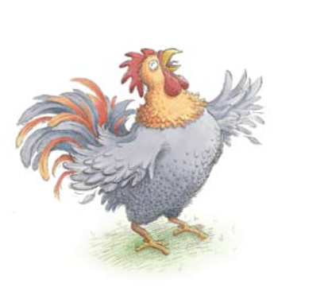

<!DOCTYPE html>
<html lang="en">

<head>
  <meta charset="utf-8">
  <title>Swiper demo</title>
  <!--<meta name="viewport" content="width=device-width, initial-scale=1, minimum-scale=1, maximum-scale=1">-->
  <meta name="description" content="">
  <meta name="keywords" content="">
  <meta name="viewport" content="width=device-width, initial-scale=1, maximum-scale=1, user-scalable=no">

  <meta name="renderer" content="webkit">
  <meta http-equiv="Cache-Control" content="no-siteapp" />
  <link rel="icon" type="image/png" href="assets/amazeui/i/favicon.png">
  <!-- Link Swiper's CSS -->
  <link rel="stylesheet" href="assets/swiper/css/swiper.min.css" type='text/css'>
  <link rel="stylesheet" href="http://cdn.clouddeep.cn/amazeui/1.0.1/css/amazeui.min.css" type='text/css'>

  <link rel='stylesheet' id='bootstrap-css'
    href='http://www.fontawesome.com.cn/wp-content/themes/deeptimes/assets/bootstrap/css/bootstrap.min.css'
    type='text/css' media='all' />
  <link rel='stylesheet' id='font-awesome-css'
    href='http://www.fontawesome.com.cn/wp-content/themes/deeptimes/fonts/font-awesome/css/font-awesome.min.css'
    type='text/css' media='all' />

  <!-- Demo styles -->
  <style>
    * {
      touch-action: pan-y;
    }

    html,
    body {
      position: relative;
      height: 100%;
    }

    body {
      background: #eee;
      font-family: Helvetica Neue, Helvetica, Arial, sans-serif;
      font-size: 14px;
      color: #000;
      margin: 0;
      padding: 0;
    }

    .swiper-container {
      width: 100%;
      height: 100%;
    }

    .swiper-slide {
      text-align: center;
      font-size: 18px;
      background: #fff;

      /* Center slide text vertically */
      display: -webkit-box;
      display: -ms-flexbox;
      display: -webkit-flex;
      display: flex;
      -webkit-box-pack: center;
      -ms-flex-pack: center;
      -webkit-justify-content: center;
      justify-content: center;
      -webkit-box-align: center;
      -ms-flex-align: center;
      -webkit-align-items: center;
      align-items: center;
    }

    .swiper-pagination-bullet {
      width: 20px;
      height: 20px;
      text-align: center;
      line-height: 20px;
      font-size: 12px;
      color: #000;
      opacity: 1;
      background: rgba(0, 0, 0, 0.2);
    }

    .swiper-pagination-bullet-active {
      color: #fff;
      background: #007aff;
    }

    .audio-active {
      color: #15afef
    }

    .clear {
      clear: both;
    }

    .right {
      background-color: #808080;
      width: 150px;
      float: right;
    }

    .full-page {
      width: 100%;
      height: 100%;
    }

    .health-bg-green {
      background-color: #4d9250;
    }

    .line-front {
      font-size: 30px;
    }

    /*竖屏*/
    @media only screen and (orientation:portrait) {

      /*body *{ display:none !important;}
	body:after{ content:"现在是竖屏"; width:100%; height:100%; text-align:center; display:flex; align-items:center; justify-content:center;}*/
      .imgdiv {
        width: 100%;
        height: 50%;
      }

      .textdiv {
        width: 100%;
        height: 50%;
        padding: 40px 20px;
      }

      .title {
        font-size: 30px;
        margin-top: 100px;
      }
    }

    /*横屏*/
    @media only screen and (orientation:landscape) {

      /*body *{ display:none !important;}
body:after{ content:"现在是横屏"; width:100%; height:100%; text-align:center; display:flex; align-items:center; justify-content:center;}*/
      .imgdiv {
        float: left;
        width: 50%;
      }

      .textdiv {
        margin-left: 50%;
        width: 50%;
        padding: 40px 20px;
        height: 100%;
      }

      .title {
        font-size: 30px;
        margin-top: 50px;
      }
    }
  </style>
</head>

<body ontouchstart>
  <!-- Swiper -->
  <div class="swiper-container">
    <div class="swiper-wrapper">

      <script type="text/template" id="myTemplate">
        <div class="swiper-slide">
			
          <div class="full-page health-bg-green">
            <div class="title">{{title}}</div>
          </div>
        </div>
		{{#each result}} 
		  <div class="swiper-slide">
			
			<div class="full-page" >
				
				<div  class="imgdiv">
					<div style="width: 100%; height: 100%; overflow: hidden;">
						
					</div>
				</div>
				<div style="" class="textdiv health-bg-green">
					<span class="line-front">{{en}}</span>
					<span style="padding-left:15px; font-size: 24px;">
						<a href="javascript:void(0);" class="mp3-play" data-s='{{s}}' data-e='{{e}}'><i class="audio-active fa fa-volume-up" aria-hidden="true"></i></a>
					</span>
				</div>
				<div class="clear"></div>
			</div>
		  </div>
	  {{/each}}
		</script>
    </div>
    <!-- Add Pagination -->
    <div class="swiper-pagination"></div>

    <div id="fmp_flash_div" style="display:none"><audio id="audio" src="01-waking-up.mp3"></audio></div>
  </div>

  <script src="assets/swiper/js/swiper.min.js"></script>
  <script src="../js/zepto.min.js"></script>

  <script src="https://cdn.bootcss.com/handlebars.js/4.2.0/handlebars.min.js"></script>

  <!-- Initialize Swiper -->
  <script>
    $(function () {
      var audio = document.getElementById("audio");
      var start, end;
      audio.addEventListener("timeupdate", function () {
        var value = audio.currentTime;
        if (value >= end) {
          audio.pause();
        }
      });

      $(document).on("click", ".mp3-play", function () {
        start = $(this).data("s");
        end = $(this).data("e");

        if ($("#audio").data('status') === 'start') {
          audio.pause();
          $("#audio").data('status', 'stop');
          $(this).find("i").removeClass("fa-volume-off").addClass("fa-volume-up");
        } else {
          audio.currentTime = start;
          audio.play();
          $("#audio").data('status', 'start');
          $(this).find("i").removeClass("fa-volume-up").addClass("fa-volume-off");
        }

      });

      var data = {
        title: 'waking up'
        , result: [
          { en: 'The rooster wakes up. Cock-a-doodle-doo!', s: '3', e: '7' },
          { en: 'The cow wakes up. Moo, moo!', s: '7', e: '14' },
          { en: 'The pig wakes up. Oink, oink!', s: '14', e: '20' },
          { en: 'The horse wakes up. Neigh, neigh!', s: '20', e: '25' },
          { en: 'The turkey wakes up. Gobble, gobble!', s: '25', e: '29' },
          { en: 'The sheep wakes up. Baa, baa!', s: '29', e: '35' },
          { en: 'The duck wakes up. Quack, quack!', s: '35', e: '40' },
          { en: 'And the chick wakes up. Peep, peep!', s: '40', e: '45' }
        ]
      };

      var tpl = $("#myTemplate").html();
      //预编译模板
      var template = Handlebars.compile(tpl);
      //匹配json内容
      var html = template(data);
      //输入模板
      $('.swiper-wrapper').html(html);

      var swiper = new Swiper('.swiper-container', {
        pagination: {
          el: '.swiper-pagination',
          clickable: true,
          //dynamicBullets: true,
          renderBullet: function (index, className) {
            return '<span class="' + className + '">' + (index + 1) + '</span>';
          },
        },
        on: {
          slideChange: function () {  }
        }
      });

    });

  </script>
</body>

</html>